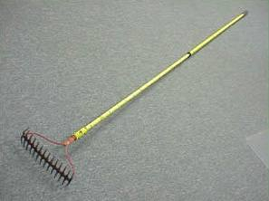
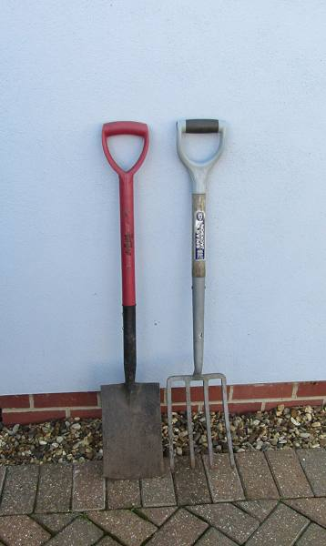
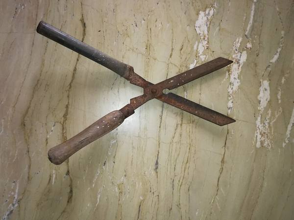
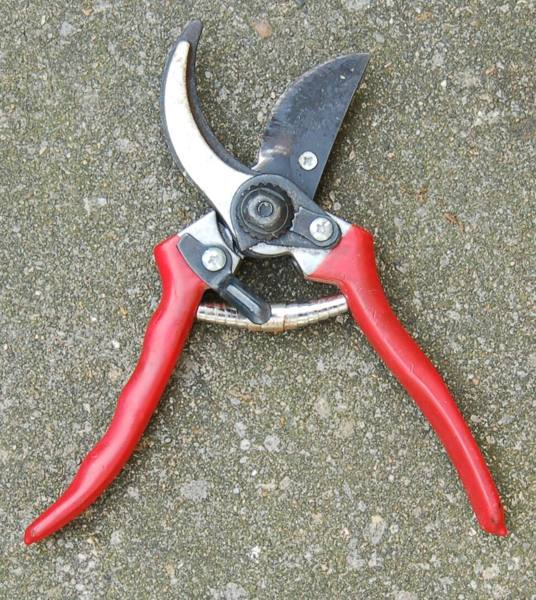
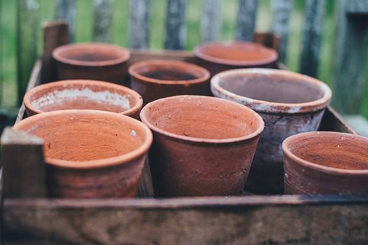
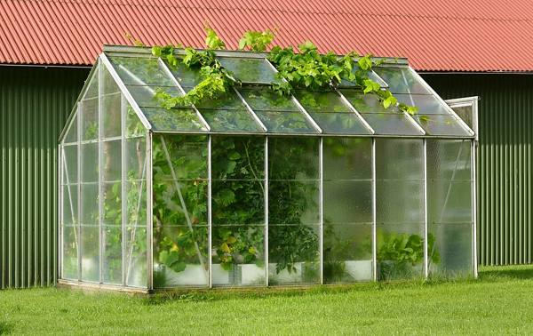
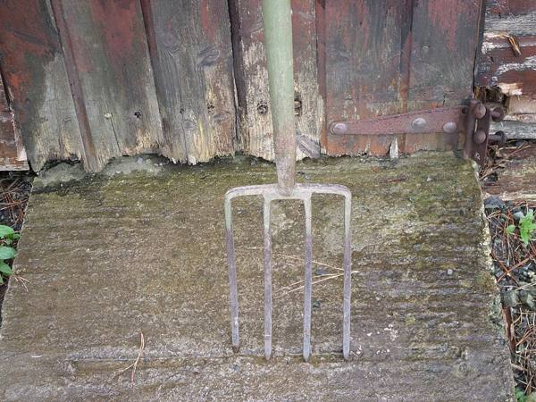
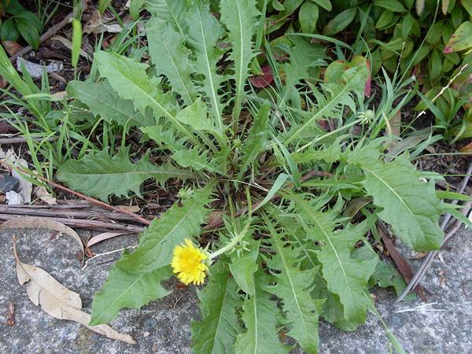

Anglais professionnel : Espace rural et environnement
Champ professionnel ERE. Seize mots anglais du métier, outils, objets et gestes de tous les jours. Ressource en libre accès.
Quatre étapes : du français à l'anglais, écouter et choisir, associer, compléter une phrase au travail. Le bouton « Écouter » lit le mot en anglais britannique.
Liste de vocabulaire
| Image | Français | English | Audio |
|---|---|---|---|
 | l'arrosoir | watering can | |
 | la brouette | wheelbarrow | |
 | le râteau | rake | |
 | la bêche | spade | |
 | la binette | hoe | |
 | la cisaille | shears | |
 | le sécateur | secateurs | |
 | le tuyau d'arrosage | hose | |
 | la tondeuse à gazon | lawnmower | |
 | les graines | seeds | |
 | le pot de fleurs | flowerpot | |
 | la serre | greenhouse | |
 | la fourche à bêcher | garden fork | |
 | les gants de jardinage | gardening gloves | |
 | la haie | hedge | |
 | les mauvaises herbes | weeds |
Corrigé pour le professeur : phrases au travail
- Fill the ________ with water. (watering can)
- Dig a hole with the ________. (spade)
- Collect the leaves with the ________. (rake)
- Cut the grass with the ________. (lawnmower)
- Plant the ________ in the soil. (seeds)
- The tomatoes grow in the ________. (greenhouse)
Dans les étapes 1, 2 et 3, la bonne réponse correspond à la ligne de la liste de vocabulaire.
Crédits des images
Photos sous licence libre, issues de Wikimedia Commons, redimensionnées pour le téléphone. Dessins originaux pour les gestes et les notions.
- l'arrosoir (watering can) : photo de Diego Delso, licence CC BY-SA 3.0, page du fichier sur Wikimedia Commons.
- la brouette (wheelbarrow) : photo de Oto Zapletal, licence CC BY 4.0, page du fichier sur Wikimedia Commons.
- le râteau (rake) : photo de U.S. Geological Survey (téléversé par Nordelch), licence Public domain, page du fichier sur Wikimedia Commons.
- la bêche (spade) : photo de Kolforn, licence CC BY-SA 4.0, page du fichier sur Wikimedia Commons.
- la binette (hoe) : photo de Batternut, licence CC BY-SA 4.0, page du fichier sur Wikimedia Commons.
- la cisaille (shears) : photo de Babitha Shetty, licence CC BY-SA 4.0, page du fichier sur Wikimedia Commons.
- le sécateur (secateurs) : photo de KoS, licence Public domain, page du fichier sur Wikimedia Commons.
- le tuyau d'arrosage (hose) : photo de Nandhp, licence CC BY-SA 3.0, page du fichier sur Wikimedia Commons.
- la tondeuse à gazon (lawnmower) : photo de kallerna, licence CC BY-SA 3.0, page du fichier sur Wikimedia Commons.
- les graines (seeds) : photo de Alexander Klepnev, licence CC BY 4.0, page du fichier sur Wikimedia Commons.
- le pot de fleurs (flowerpot) : photo de Annie Spratt anniespratt, licence CC0, page du fichier sur Wikimedia Commons.
- la serre (greenhouse) : photo de W.carter, licence CC0, page du fichier sur Wikimedia Commons.
- la fourche à bêcher (garden fork) : photo de The Banner, licence CC BY-SA 4.0, page du fichier sur Wikimedia Commons.
- les gants de jardinage (gardening gloves) : photo de Martin Majer, licence CC BY-SA 3.0, page du fichier sur Wikimedia Commons.
- la haie (hedge) : photo de Robin Stott, licence CC BY-SA 2.0, page du fichier sur Wikimedia Commons.
- les mauvaises herbes (weeds) : photo de John Tann from Sydney, Australia, licence CC BY 2.0, page du fichier sur Wikimedia Commons.
Fiche de vocabulaire à imprimer
Gros caractères (16 points minimum), en trois formats :